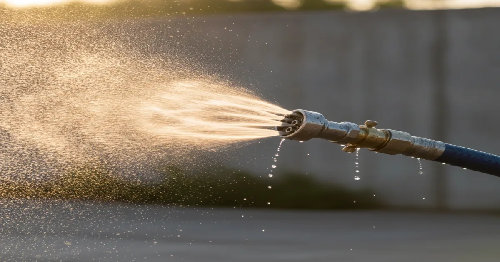
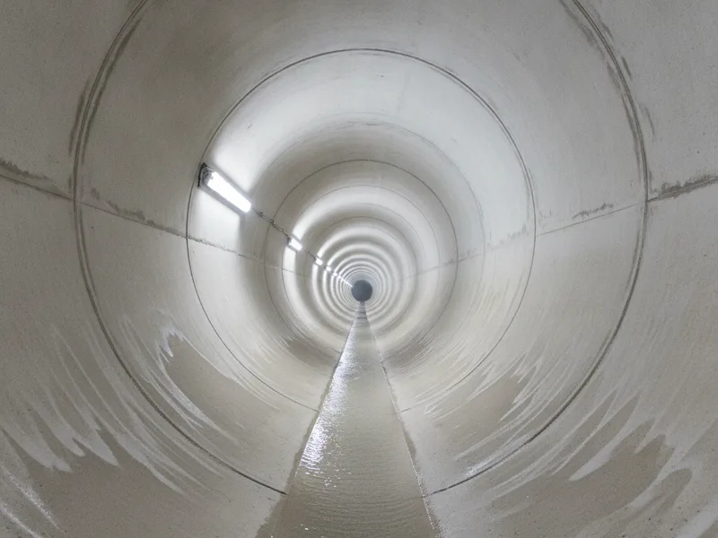

Hydro Jetting in Armonk, NY
Hydro jetting uses high-pressure water to scour the full width of your pipe, clearing grease, scale, and buildup that a cable alone tends to leave behind.
- Licensed & Insured
- Same-Day Service Available
- Upfront Pricing
- 15+ Years of Experience

Signs you need hydro jetting
Hydro jetting is usually the right call when a line stays sluggish even after cleaning or snaking, or when the same section of pipe clogs repeatedly despite regular clearing. It's also common in kitchens and older homes where drains have been slow for a long time without ever fully backing up — a sign of buildup coating the inside of the pipe rather than a single blockage.
If a camera inspection shows a heavy coating along the pipe wall rather than a discrete clog, jetting is often the more effective option, since it cleans the entire diameter of the pipe instead of just cutting a path through the middle.
What causes buildup severe enough for jetting
Grease is the biggest culprit in kitchen lines, especially in homes where it's been poured down the drain for years before anyone thought to have the line checked. Mineral scale from hard water adds to the problem over time, narrowing the usable width of the pipe.
Older homes in this area were often built with narrower original pipe diameters than what's standard in new construction, which means decades of grease and scale buildup can meaningfully restrict flow, even without a single obvious blockage ever forming. Snaking clears a path through material like this, but it doesn't remove it — jetting does.
What to do before you call
There's not much you need to do before this service beyond describing what you've noticed — how long drains have been slow, whether it's one fixture or several, and whether cleaning or snaking has already been tried. That history helps us confirm jetting is the right approach rather than a heavier tool than the problem actually needs.
If your pipes are older or you're not sure what they're made of, mention that too. Jetting pressure is adjusted based on pipe material and condition, and older or more fragile pipe may call for our cable-based option for smaller clogs instead.
Our hydro jetting process
We feed a specialized hose with a rotating nozzle into the line, using water pressure to strip grease, scale, and debris from every side of the pipe rather than just the center. Before jetting, we typically want to confirm the pipe can handle the pressure, especially in an older line, so we're not applying more force than the pipe can safely take.
Once the line is clean, we can run the camera through again to confirm the full diameter is clear, and let you know if there's any remaining issue, like a section of pipe that's too damaged for jetting to help.

When to call a professional
Call us if standard cleaning or snaking hasn't kept a drain flowing well for long, if you're dealing with recurring grease buildup in a kitchen line, or if a camera inspection has already shown significant buildup along the pipe walls. If the pipe has more than buildup going on — a crack, a belly, or a section that's collapsed — the line itself needs structural repair, and jetting is typically done as a step before or after that repair rather than instead of it.
The Bob Vila home resource has noted that hydro jetting is generally considered the most thorough way to clear grease and mineral buildup from residential drain lines, which is consistent with how we use it here.
For everyday clogs that haven't reached this point, our other drain and sewer solutions we offer may be a simpler and more affordable place to start.
Frequently asked questions
Is hydro jetting safe for all types of pipe?
It's safe for most modern pipe, but older or already-damaged pipe may need lower pressure or a different approach. We check the pipe's condition before recommending jetting.
How is hydro jetting different from drain snaking?
Snaking cuts a path through a blockage using a cable. Jetting uses high-pressure water to clean the entire inside surface of the pipe, removing buildup rather than just pushing it aside.
Will hydro jetting damage my pipes?
When pressure is matched to the pipe's material and condition, no. That's why we typically check the line first, especially in older homes.
How long does a hydro jetting service take?
Most residential jobs take one to two hours, depending on the length of the line and how much buildup needs to be cleared.
Is hydro jetting worth it if cleaning has worked before?
If cleaning keeps needing to be repeated, jetting often solves the problem for longer, since it removes the buildup rather than just clearing an opening through it.
Do you jet commercial kitchen lines as well as residential ones?
Yes. We jet both residential drain lines and commercial kitchen lines, including as part of ongoing grease trap maintenance.